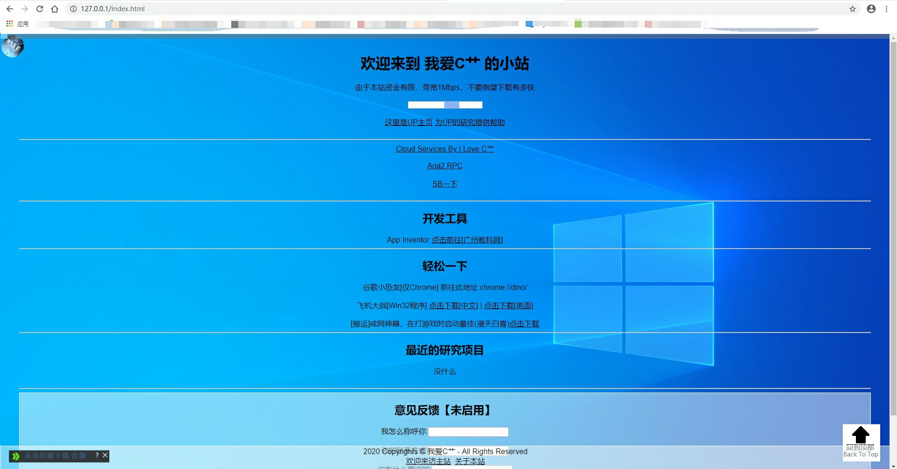
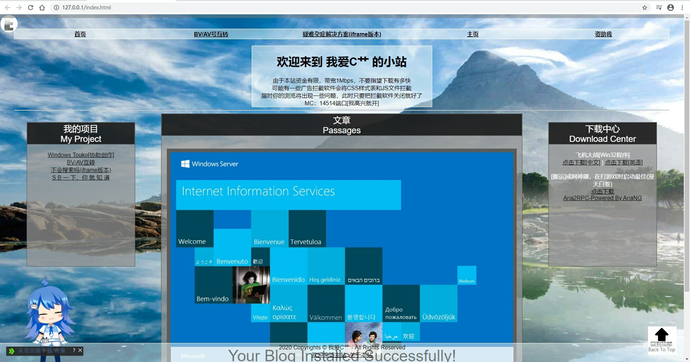

曾经，我的Blog是在学校建立起来的，我也不敢用学校的电脑作服务器，毕竟没有老♂黑(
详情)那么大胆，好像他是在学校捡到一个废弃的服务器拿来做下载站了。
那时，我的HTML功底很差，排版很简陋，只能写一些简单的流式段落。
在一开始的时候，我的页面Element还是各种<p align="center"></p>
嘛，后来我看了一下IIS的初始页面，认识了CSS，然后加了text-align，把所有的<p>都换成了<br>

↑嘛，大概长这样(怀旧一波)↑
其实也不算是一个Blog，倒是有点像商业网站
后来呢，一个名叫qwe的网友给了我一个随机壁纸的js，然后我开了他的js，把所有壁纸连着js一起给爬下来了，然后他很生气，把我IP给ban了，到现在我都上不去
然后呢我页面一多起来我的下方版权和憨憨顶部导航栏（对，就是那个白白的顶部的憨憨导航栏）写起来就很麻烦，在研究怎么批量引用版权，那些icon和css引用，上网查了好多资料。最后呢因为上边的Js事件我明白了可以直接document.write批量写入（Cyka Blyat！）
最近吧，某个DrBlack群(以下简称黑群)的群友让我挂了个网页（对，就是那个Windows Touko，整个页面都是我写的，耗了我一个早上）。
我寻思着得改一下UI了，WordPress要注册，Typecho要PHP环境，所以就又花了半天去写了个新的UI，就是现在那个CaoCho，你也可以称为CaoPress。
后来我又陆陆续续加了一个Live2D看板娘，一个播放器(感谢
LRain大佬)。
然后大概就变成现在的样子了。
